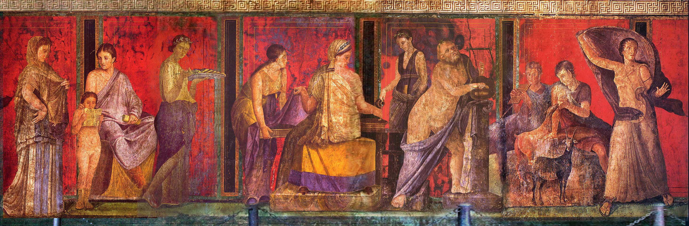

Cult of Dionysus
The Cult of Dionysus was strongly associated with satyrs, centaurs, and sileni, and its characteristic symbols were the bull, the serpent, tigers/leopards, the ivy, and the wine. The Dionysia and Lenaia festivals in Athens were dedicated to Dionysus, as well as the Phallic processions. Initiates worshipped him in the Dionysian Mysteries, which were comparable to and linked with the Orphic Mysteries, and may have influenced Gnosticism. Orpheus was said to have invented the Mysteries of Dionysus.
The Cult of Dionysus traces back to at least Mycenaean Greece. Dionysus is often shown riding a leopard, wearing a leopard skin, or in a chariot drawn by panthers, and may also be recognized by the thyrsus he carries. Besides the grapevine and its wild barren alter-ego, the toxic ivy plant, both sacred to him, the fig was also his symbol.
The original rite of Dionysus (as introduced into Greece) is associated with a wine cult (not unlike the entheogenic cults of ancient Central America), concerned with the grapevine's cultivation and an understanding of its life cycle (believed to have embodied the living god) and the fermentation of wine from its dismembered body (associated with the god's essence in the underworld). Most importantly, however, the intoxicating and disinhibiting effects of wine were regarded as due to possession by the god's spirit (and, later, as causing this possession). Wine was also poured on the earth and its growing vine, completing the cycle. The cult was not solely concerned with the vine itself, but also with the other components of wine. Wine includes other ingredients (herbal, floral, and resinous) adding to its quality, flavour, and medicinal properties. Scholars have suggested that, given the low alcoholic content of early wine, its effects may have been due to an additional entheogenic ingredient in its sacramental form. Honey and beeswax were often added to wine, introducing an even older drink (mead). Károly Kerényi postulated that this wine lore superseded (and partly absorbed) earlier Neolithic mead lore involving bee swarms associated by the Greeks with Dionysus. Mead and beer (with its cereal base) were incorporated into the domain of Dionysus, perhaps through his identification with the Thracian corn deity Sabazius.
